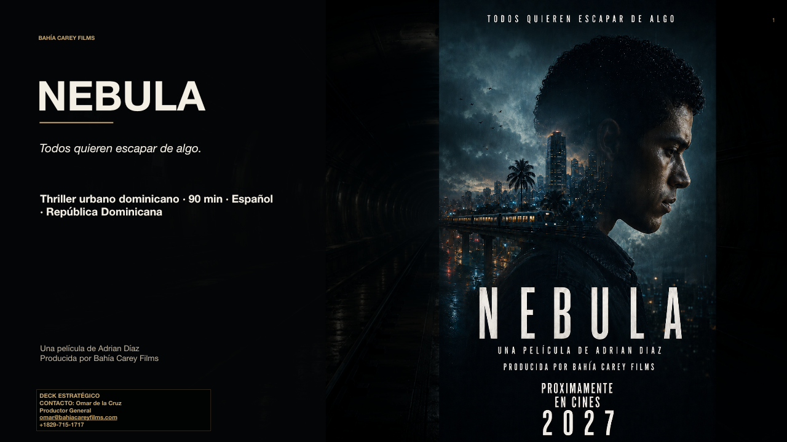

LA IDEA CENTRAL
La verdad también tiembla.
Convertir un accidente en una radiografía urbana del encubrimiento.
NEBULA no es solo una historia policial. Es una película sobre personas atrapadas entre el deseo de vivir y la imposibilidad de sobrevivir dentro de un sistema que ya decidió qué versión de la realidad será verdadera.
GéneroThriller policial / drama urbano
Duración90 minutos
OrigenRepública Dominicana
ProducciónBahía Carey Films
PITCH DE INVERSIÓN
La película, la oportunidad y la alianza.
Usa las flechas, desliza en móvil o selecciona una miniatura.

UNA INVITACIÓN A PARTICIPAR
Una historia local con lenguaje internacional.
NEBULA combina valor cinematográfico, conversación pública y oportunidades de posicionamiento para aliados comprometidos con la industria audiovisual dominicana.